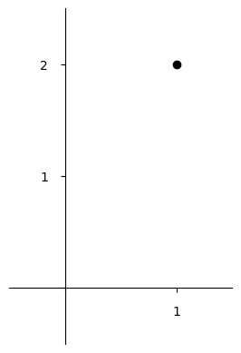
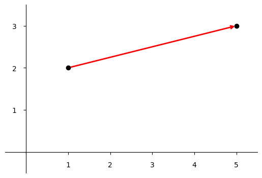

Outline for Fundamental Linear Algebra
Monday July 20, 2026
I'm thinking about how to make linear algebra so simple that it could be taught much earlier than it usually is. I think it's often presented with some mix of excessive abstraction (proofs, symbols-only) and excessive concreteness (obsession with Gaussian elimination and manipulating matrices by hand) and often with things (matrix multiplication) that should be explained introduced as if they sprung up my magic. Consider this my thinking draft.
\[ \begin{array}{l} \text{Linear} \cr \begin{bmatrix} 1 & \hspace{0.7em} 2 \end{bmatrix} \cr \text{Algebra} \end{array} \hspace{-0.6em} \begin{bmatrix} 1 \cr \rule{0pt}{1.4em} 2 \end{bmatrix} \]
Linear Algebra is a mathematics of multiple dimensions. For example, you can think of the matrix \( \begin{bmatrix} 1 \cr 2 \end{bmatrix} \) as a point in two-dimensional space.

A matrix is also a linear transformation. For example, the row vector \( \begin{bmatrix} 1 & 2 \end{bmatrix} \) transforms the column vector \( \begin{bmatrix} 1 \cr 2 \end{bmatrix} \) and produces 5.
\[ \begin{bmatrix} 1 & 2 \end{bmatrix} \begin{bmatrix} 1 \cr 2 \end{bmatrix} = 1 \cdot 1 + 2 \cdot 2 = 1 + 4 = 5 \]
Going left to right and top to bottom, just as we read and write, we pair elements, multiply them, and add up the products. This is called the dot product.
The same operation extends to transformations that produce multidimensional outputs.
\[ \begin{bmatrix} 1 & 2 \cr 3 & 0 \end{bmatrix} \begin{bmatrix} 1 \cr 2 \end{bmatrix} = \begin{bmatrix} 1 \cdot 1 + 2 \cdot 2 \cr 3 \cdot 1 + 0 \cdot 2 \end{bmatrix} = \begin{bmatrix} 1 + 4 \cr 3 + 0 \end{bmatrix} = \begin{bmatrix} 5 \cr 3 \end{bmatrix} \]
You can picture this transformation as "moving" a point.

Linear transformations can stretch, rotate, and reflect. They can also behave like zero for one or more of their dimensions.
Matrix multiplication is the natural simplification of multiple subsequent transformations using dot products. We see that often, order matters, and \( MN \neq NM \).
Doing algebra with multidimensional linear transforms lets you solve problems. For example, in \(MX = C\), each of M, X, and C is a matrix, and X is unknown. We solve for X by multiplying both sides, on their lefts, by the inverse of M, and find \( X = M^{-1}C \).
Just as with square roots, it's possible to do calculations like this by hand, but in practice we use computers.
There are more techniques, like factorizations, and many more applications.
Thoughts
The version here is already getting long for a one-page summary, and the typography and graphics are fiddly. Is there a good way to condense even more?
I feel like the "input/output" thinking I like is a little buried here... How can I foreground that more effectively?
Should I include my dimensionality diagrams here already?
Eigenvector stuff: should it appear quite early, around the "what do matrices do" topic? Or come later? (Really, maybe even SVD should be in the "what do matrices do" topic? But how do you get it to come then?)
When I say I'm thinking about linear algebra, people rarely fail to mention 3Blue1Brown. And indeed, looking at it again now, I wonder how much it influenced me. Maybe I should go look at it again now. I think there are differences (for example I think he has even less on solving MX = C?) and I wonder what he would consider his "learning goals" for viewers... What would I consider mine?
I guess he's focused on the visual intuition side of things... Is that an end in itself? Maybe it helps with understanding, generally...
I think my goal is more around application: Linear algebra should be understood as "ordinary mathematics," as a tool for solving problems. I would like learners to be able to map linear algebra onto things in the world and use it to solve problems. To model things with it and have enough facility in the algebraic side, and enough understanding to know when/whether a solution is possible, and then to use software to do the actual calculations.
Other posts related to linear algebra
- 2024-06-24: A brief development of matrix multiplication
- 2024-06-16: Linear Algebra Done Right, by Axler
- 2021-09-15: You can derive the formula for the determinant
- 2021-09-15: The flow metaphor for matrix multiplication